My Life Shot
干饭使我快乐
 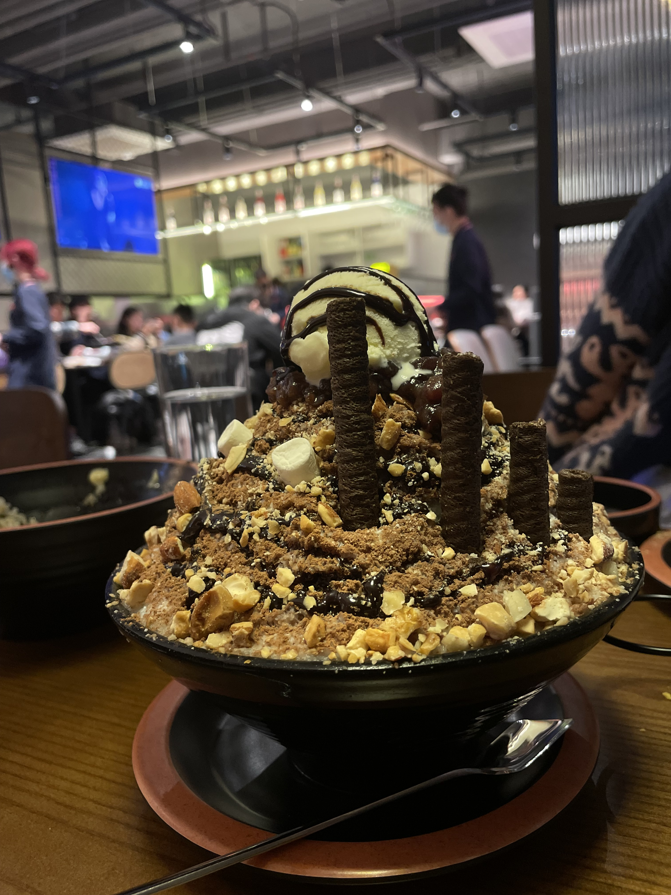
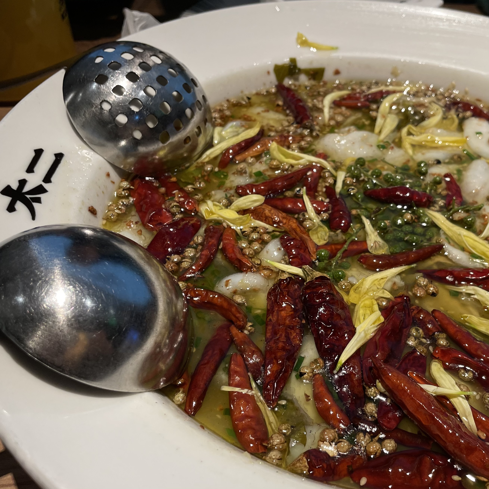
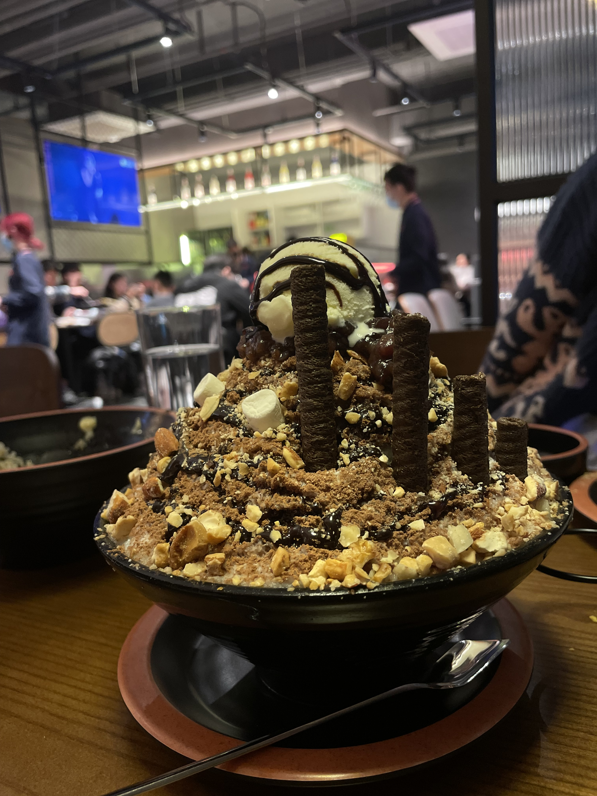
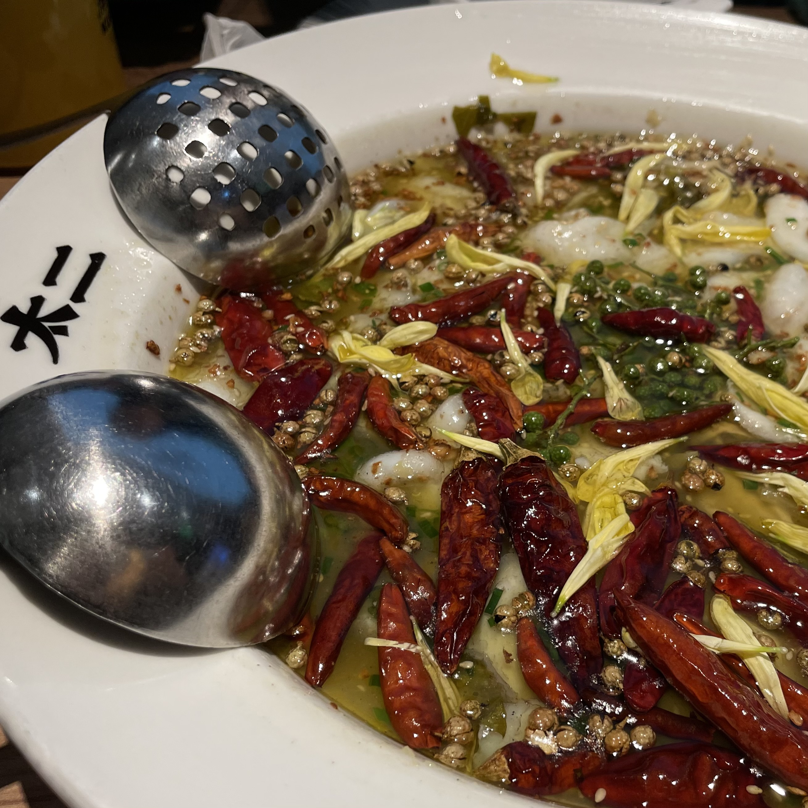
“干饭”是四川方言形容吃饭的一种说法，因其狂傲的语调和豪放的气势得以互联网的世界上流传。出自抖音土味博主诗书达礼之山人，他每次在院子里吃饭，开篇都会说一句“干饭了！干饭了”，手举着一碗饭菜向屏幕前展示，一般话音刚落，他的鸡仿佛能听懂，并且就会过来叼走他碗里的菜。于是就有了横扫鸡饿，坐回自己的场景。
我喜欢世上一切的美食，我喜欢干饭，因为干饭能让我暂时消除一天的疲惫。因为干饭真的好香啊！！！ 这个世界上没有人会不爱干饭吧！！！！ 我就是爱干饭的大学生！！！！每天总得有点盼头！干饭就是最大的盼头之一！！
每当我品尝一道新菜品时，内心的好奇感得以满足，这种感觉真的太棒了！
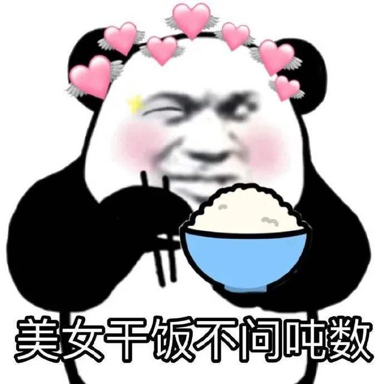
我爱旅行
 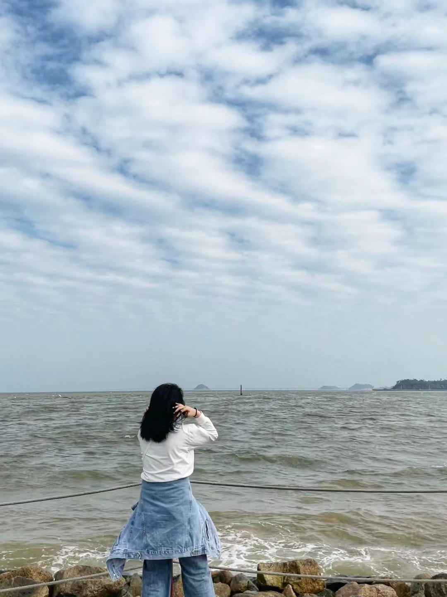
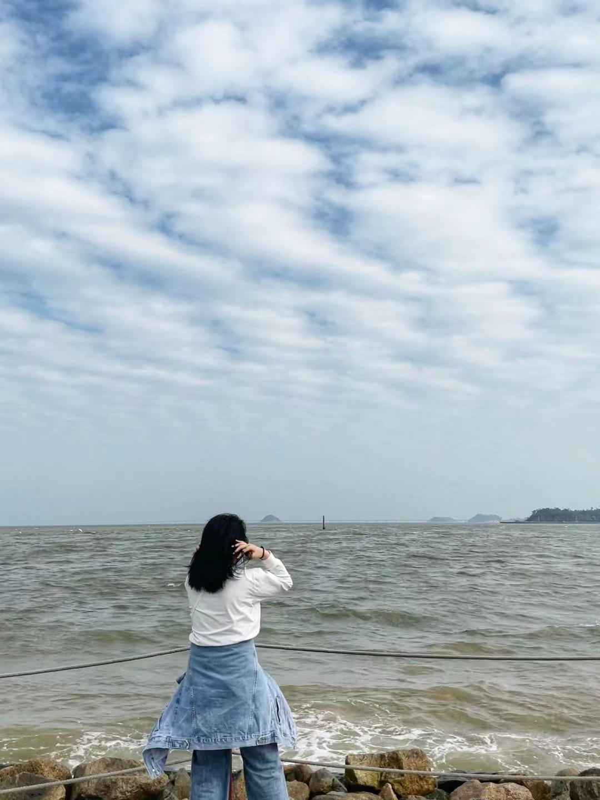
我是一个很喜欢旅行的人，我喜欢在路上的感觉。到了不同地方，感受当地的风土人情，让我的思维更加开阔。不同国家、不同地区这种差异性时常让我产生许多新的生活灵感。
旅行是一场感动，一场旅心，一场修行。走出去是为了走回来，只有清楚世界的方位，才能找到自身的定位。当跋涉过岁月与山河，挣扎过月亮与六便士，旅行成为身体和灵魂的一部分后，你会发现自己想要什么样的风景，什么样的生活，继而找到一条适合自己的路，找到自己最舒服的状态。
《梦游木斯塘》的序言里写道：旅行是生活的一部分，而非生活的对立面。人不能因为在路上，而忘记做人最根本的言行举止。旅行之于平凡的你我，也许正是治愈生活带给你的伤痛，然后让你拥有继续前进的勇气。
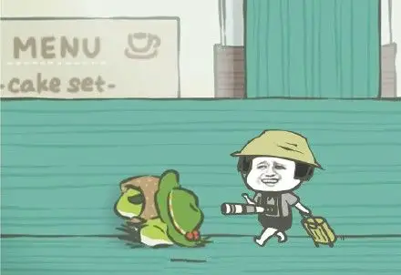
用镜头记录美好生活
我看到觉得美得或者有趣的画面会不由自主的拿起手机或相机拍下来，它给我带来一种时间印记的积累，美的积累。人终会一天会苍老，会死去，但他拍得有意义的照片可能永远不会消失，是永久地生存。而照片后的故事会深深地给我们留下深刻的回忆。摄影是一个非常快乐的过程，当你为了拍摄美丽的日出，你通常会比较经天还没亮你就早点起床，经过登高跋涉等待日出，当太阳出来的那一刻你摁下快门，之前那些辛苦准备就会烟飞云散。而当你拍出一张美丽的照片的时候，会感到有成就感。
摄影迫使你能够根据新的角度、新的视角和新的镜头来看待新的事物。摄影要求你从不同寻常的角度和视角来看待事物，它能塑造你，让你从新的角度和视角来看待同样的主题。对我来说，摄影是观察的艺术，在平凡的地方找到有趣之处。对于所见之物，可以做的事情很少，可以观察的方式却有很多。下面的这张照片是我自认为很满意的一张照片，是在广东清远游船的时候拍摄的，我觉得很有意境。
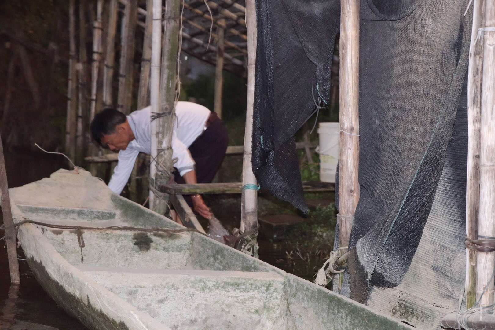
我的爱豆
跟很多女生一样，我也有很喜欢的IDOL，他就是宋亚轩。小宋是时代峰峻集团下男团时代少年团的第三名，是该团体中的歌担。我最喜欢他的微笑，真的很能治愈人哇！
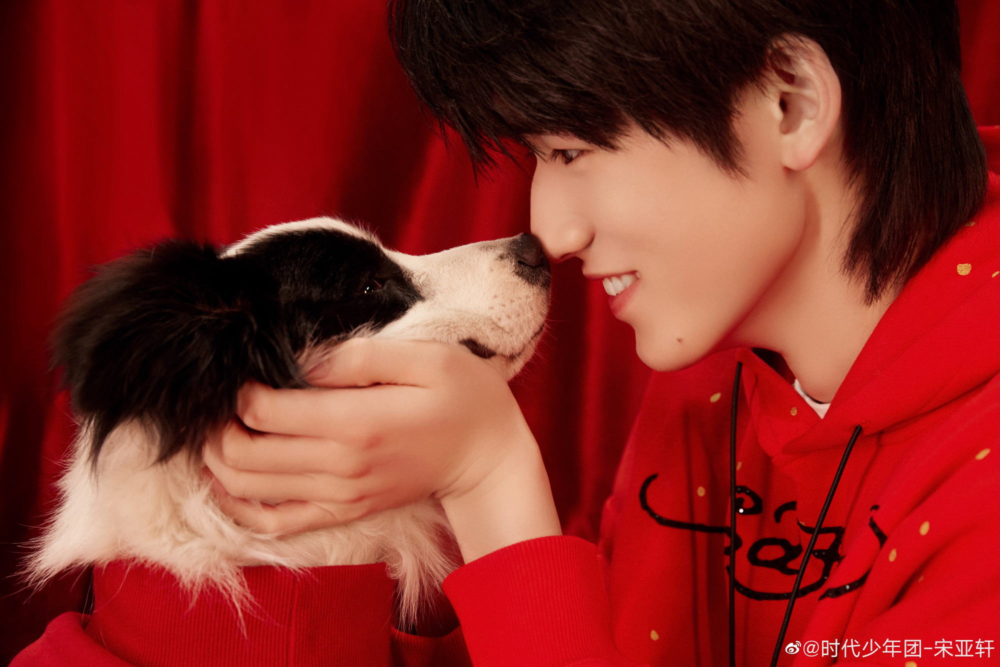 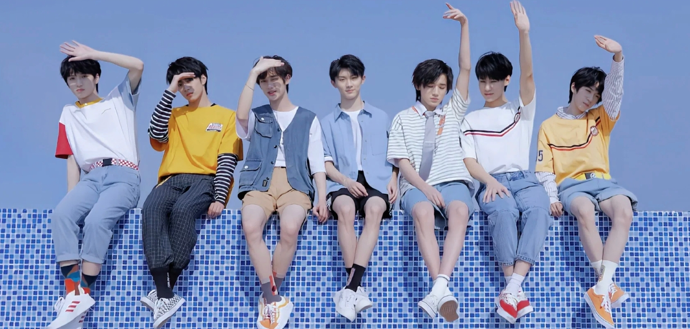宋亚轩，2004年3月4日出生于山东省滨州市博兴县，中国内地流行乐男歌手、影视演员。 2016年2月，在北京卫视《音乐大师课》第二季中首次走进大众视野；8月，参加录制北京卫视美食节目《幸福的味道》。2017年，参加录制湖南卫视《天天向上》和《快乐大本营》。2018年，参演奇幻校园网剧《念念》。2019年2月，参加录制的综艺《台风少年行》播出；3月，参加录制央视《经典咏流传》第二季。2020年1月，参加录制的综艺《少年梦游记》播出。
小宋在我心中就是正能量偶像，浅浅追一下星也能激励自己更加努力！